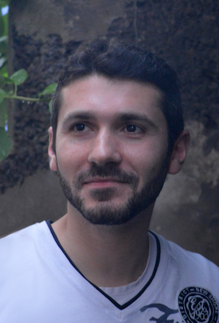

Pierre CASTRONOVO
Web développeur
Ancien ingénieur architecte reconverti dans le monde Web et fort de mon expérience en tant que web-développeur, j'ai mené de multiples projets dans leur intégralité, de la conception à la finalisation, seul ou au sein d'une équipe, en PHP et MySQL puis en Symfony.
Très intéressé par le coté graphique, j’ai un plaisir particulier à réaliser la mise en oeuvre des différentes interfaces de sites (SCSS, JS jQuery, Responsive Design).
Passionné par Photoshop depuis de nombreuses années, tant pour la retouche de photos que pour la mise en page de documents tels que visuels de site web, catalogues, etc.
Je vous laisse découvrir ci dessous certains de mes projets.